Tournament Project
Summary
The data that was used for the analysis comes from Genshin Impact, I highly successful open world action role playing game. Since the game is a live service it frequently adds new content within patches, and around 5 months ago the game released a card game within the game. Genshin Impact has quite a devoted fanbase, so it didn't take long for people to start organizing and playing within tournaments. I joined a discord server that hosted some tournaments which is specifically where the data comes from that I used for this project. The name of the discord is Genius Invocation TCG but in the future I will refer to as GITCG. I participated and kept up with the card game but over time I got busy and wasn't able to be as active. However, nearing the Google Data Analytics capstone project I started thinking about what I should do for the capstone and I heard that a big patch would be rolling out that would add a lot of cards. So after hearing that, I decided that I wanted to use the tournament data for my capstone. So for this project, I wanted to find out what were the most used characters/decks for each patch and their respective winrate.
Data Collection
Since I participated in a few tournaments, I know that GITCG releases a spreadsheet with all the decks being brought for that week along with a link to a 3rd party tournament website so you can keep track of who your next opponent will be and it also keeps track of all the wins/losses. So I know where to get the data, but since there were so many spreadsheets and links, first I wanted to create a master list of all the links to the spreadsheets and tournaments to make it easier keeping track of all of it.
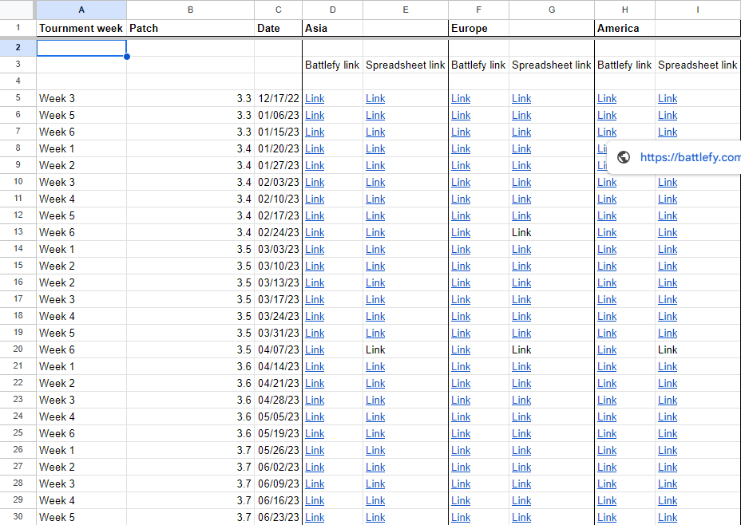After putting all the links in an easily identifiable table, I started looking at the spreadsheets with all the decklist data and I knew that I wasn't going to be needing some of the columns for my analysis but I also knew it needed a bit more data. For example, in the left picture I will mostly just need the Ingame Name as that is what is used for the 3rd party tournament website to identify the person, and I also needed all the characters.
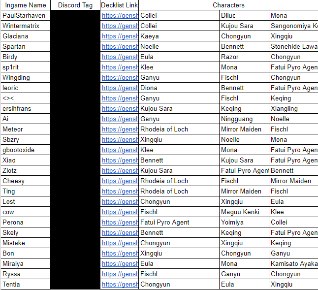 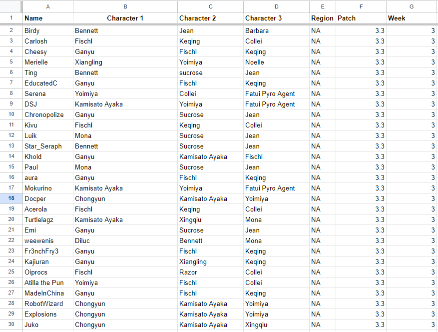The right picture is how it ultimately ended up looking like, there are a bit more columns now which I added because I felt like it would be necessary for my analysis. After doing that for all the spreadsheets, I noticed that there were some misspellings for the character columns. In total there were around 2 thousand rows, so checking manually was out of the question. Instead I decided to make a list of all the correct spellings for the characters and used Vlookup along with conditional formatting to easily spot misspellings and used the tool "find and replace" to find all the misspellings and instead replace them with the correct one.
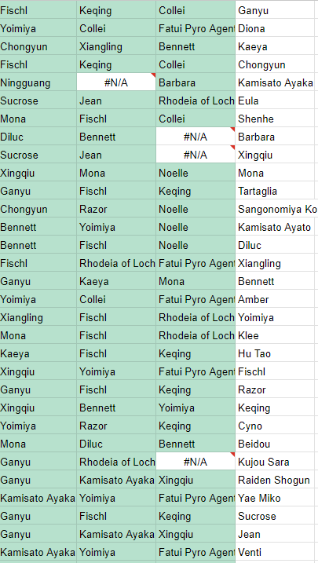Now that we have all the decks formatted and cleaned, it is time to look at the 3rd party tournament data. I took the data from the website and put it on a different spreadsheet tab to do all the work in. Then I put made some Vlookup formulas to grab the numbers in the middle ,which represents who won and loss, and seperate the winner and loser. The winner is put on the left, while the loser gets put on the right. Then I put a true or false equation to make sure there isn't an error like two winners or losers. The left picture showcases the original data pulled from the website, while the right is the data sorted and cleaned.
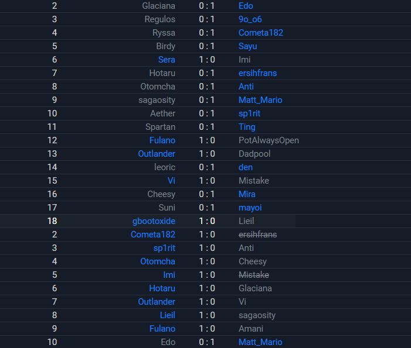 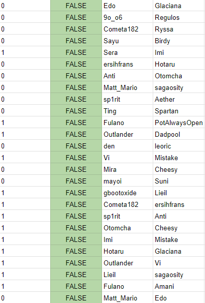After repeating that proccess, all the winners and losers have been sorted. Now I did some more Vlookup formulas to grab the characters that the person was using from the decklist sheet, and put the characters that won on the left while putting the ones that lost on the right. Then after repeating that a couple of times, I took all the data and put it on a new sheet. Finally I have all the data that I need, one table that has a list of all the decks, and another that has all of the matches that players have had that includes wins/losses. In total the win/loss table has a total of 5 thousand rows, while the decklist table has around 2 thousand rows.
Analysis
Now that the data is set, it is time to analyze the data and my choice of platform was SQL. First I created a dataset, tables and uploaded the data to said tables. Second I wanted to just simply agregate the data and count how many times a character showed up within patches. However I found that with how the data is formated, that it was tough for SQL to count all the characters within three columns without giving errors. So I decided to instead combine those three columns into one making it far easier to count correctly. I combined those three columns into a temporary table and then made some simple calculations using that temporary table. The left picture is the code that I used, while the right one is the result.
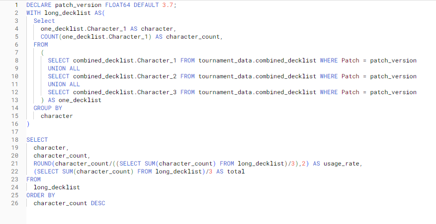 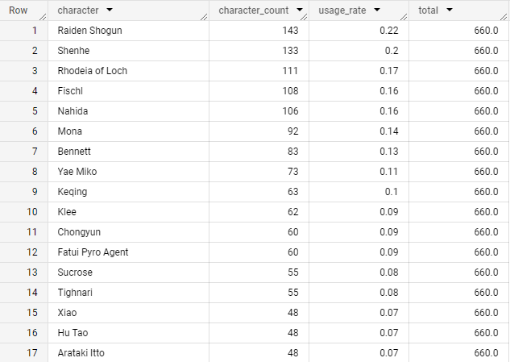It is worth noting that each deck can run 3 characters, so that is why some percentages is a bit high. With this bit of coding we can figure out who were the most used characters but not exactly what were the most used/popular decks. In order to figure that out, I duplicated the query and on the part where we are combining the three columns, I added a filter or where clause to only grab the rows based on the condition which I can easily change at the very top. By adding that bid of code, I can now see what were the characters that were most used alongside one another. Once I saw what two characters were most used alongside one another, I would then add another filter in order to see what was the most used character for those characters and it showed how many times that deck was used. In this case for patch 3.7, the most used character was Raiden Shogun. Then I filtered out rows where only she was there. After checking checking who were the most used characters with her, the first three were Chongyun, Shenhe, and Itto. Next I filtered the data again where it was only Raiden and Chongyun which showed that the most used character with those two was Shenhe, which showed that those three as deck were used 23 times.
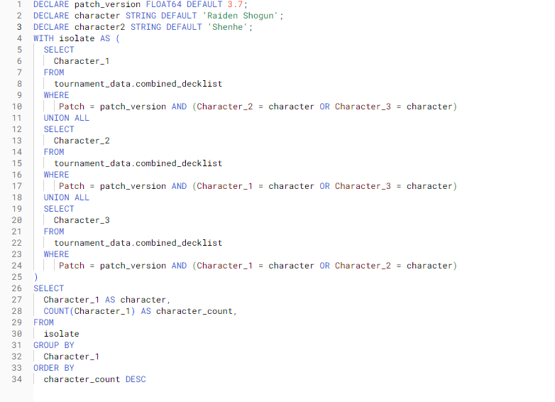 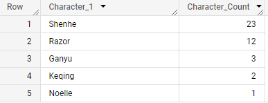So I decided to repeat that proccess for all the patches to find the most used characters/decks for all patches. Now that I know which were the most used characters/decks, now I want to know their respective winrate. In order to calculate that, I filtered rows where the selected deck was either the winner or loser. I created a temporary table to hold all those values, then in order to get the winrate I put a nested query to count all the rows where the deck won divided by the total decks. Using the same deck from the past example, that deck had a winrate of 68 percent with 106 total matches played. For most card games, since it is a 1v1 game then a winrate of around 50 percent is very healthy. So in comparison,this deck has a very high winrate.
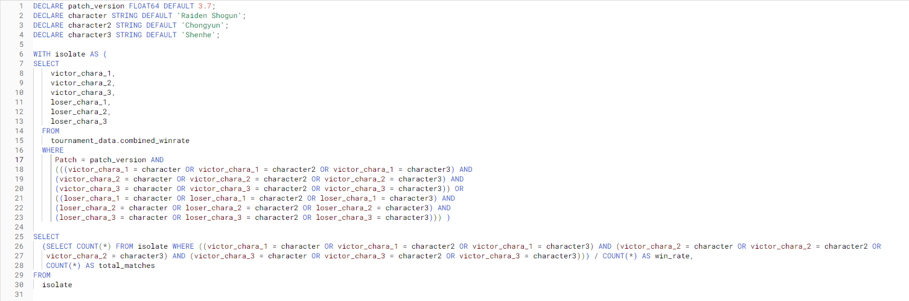Share
I have the data that I need, and I have the neccessary insights, now it is time to visualize that. I wanted the data to be interactable, not static, and be able to change when new information is added. So with that in mind, I decided on Tableau. I didn't have that much experience with Tableau and I knew that I would need to learn a lot. The whole experience was a big learning proccess and at times was quite fustrating, but by being able to ask the right questions online I was able to make a visualization that I was proud of. You can visit the visualization and mess around with it by clicking on this link. Now, lets go over the most notable decks for each patch.
Patch 3.4
Mona, Xingqiu and Ganyu showed up together 41 times which was a total of 10 percent of all decks. The deck played a total of 167 matches with an average winrate of 62 percent
Patch 3.5
Fischl, Rhodeia of Loch and Mirror Maiden showed up together 63 times which was a total of 13 percent of all decks. The deck played a total of 259 matches with an average winrate of 71 percent
Patch 3.6
The same deck from last patch was still the most popular for this patch showing up 41 times which was a total of 13 percent of all decks. The deck played a total of 160 matches with an average winrate of 72 percent. As you may have noticed, the numbers are quite a bit lower but the percentages stayed around the same. The reason being that there were less players for this patch and some attributed that to the dominance of this deck, and how unenjoyable it was to play against it since it was a control deck. There was no chart included as the deck got banned for the rest of the patch but during week 1 and week 2 it was played enough to still make it the most used deck for the patch.
Patch 3.7
As I mentioned before, this patch added a lot of cards so there were a big variety of decks this time around. The most used deck this time around was a variation that opted in Nahida for Mirror Maiden since she got nerfed this patch. The deck showed up 40 times which was a total of 6 percent of all decks. The deck played a total of 161 matches with an average winrate of 66 percent
Conclusion
I find it quite surprising how one deck can be so dominant over two patches, while two characters from that same deck continue to assert dominance. If I were to give advice, then I would advise to nerf either Fiscl Rhodeia of Loch in some form as she is the most used character. However, most view Fischl as very
fair since she doesn't do anything overpowered, she is just a very versatile character. The same can be said for Rhoedeia of Loch, the character also has low damage but just allows for consistent damage and comboes. If I were to nerf something in particular then I would
need more in depth data in order to make the best decision but based off of the information that I have then I would nerf both of their ultimates to do less damage as nerfing anything else would completely decimate the characters.
That is the end of this project and thank you for joining me. If you want to see and mess with the visualization then click on this link.